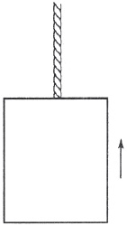
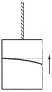

Süredurum yasası, fizikte ilk büyük ilerlemeye, daha doğrusu fiziğin gerçek başlangıcına damgasını vurur. Bu yasa, düşünselleştirilmiş bir deney üzerinde düşünülerek bulunmuştur: Bir cisim, sürtünmenin ya da başka bir dış kuvvetin etkisinde kalmadan, hiç durmaksızın hareket etmektedir. Bu örnek ve daha sonraki başka birçok örnek, düşünselleştirilmiş deneyin önemini bize öğretti. Burada da düşünselleştirilmiş deneyler üzerinde durulacaktır. Bu deneyler, insana çok gerçeksiz (fantastic) görünebilir, bununla birlikte, ilişkinlik (relativity) konusunu basit yöntemlerimizin elverdiği ölçüde anlamamızı sağlayacaktır.
Daha önce, bir-biçimli hareket eden bir oda ile düşünselleştirilmiş deneyler yapmıştık. Burada, bir değişiklik olsun diye, düşmekte olan bir yükseleç [elevator, Aufzug, ascenseur] kullanacağız.
Gerçek herhangi bir gökdelenden çok daha yüksek bir gökdelenin tepesinde büyük bir yükseleç düşününüz. Yükseleci çeken çelik halat birdenbire kopuyor ve yükseleç hiçbir engelle karşılaşmadan düşmeye başlıyor. Yükseleçteki gözlemciler, düşme sırasında, deneyler yapıyorlar. Bu deneylerde havanın direnci ya da sürtünme üzerinde durmamızın hiç gereği yoktur; çünkü düşünselleştirilmiş koşullarımızda onların varlığını umursamayabiliriz. Gözlemcilerden biri, cebinden bir mendil ve bir saat çıkarıp ikisini de elinden bırakıyor. Bu iki cisim ne olur? Yükselecin penceresinden içeriye bakabilen dış gözlemci için, mendil de saat de, aynı biçimde, aynı ivme ile yere doğru düşer. Düşen bir cismin ivmesinin o cismin kütlesinden tümüyle bağımsız olduğunu ve bu olgunun gravitational kütleyle süredurumsal kütlenin eşitliğini gösterdiğini biliyoruz (bkz: s. 41). Gene biliyoruz ki, gravitational kütle ile süredurumsal kütlenin eşitliği, klasik mekanikte bir rastlantı olarak değerlendirilmekte ve bu eşitlik, klasik mekaniğin kuruluşunda hiç rol oynamamaktadır. Oysa burada, bütün düşen cisimlerin eşit ivmesinde yansıyan bu eşitlik pek önemlidir ve bütün düşünüşümüzün tabanını oluşturmaktadır.
Gene düşen mendil ile saate dönelim; dış gözlemci için, bu iki cisim aynı ivme ile düşmektedir. Ama yükseleç, yükselecin duvarları, tavanı ve tabanı da aynı durumdadır. Bundan dolayı, bu iki cisim ile taban arasındaki uzaklık değişmeyecektir. İç gözlemci için, bu iki cisim, tam onları bıraktığı yerde kalır. İç gözlemci, gravitational alanı tanımazlıktan gelebilir; çünkü gravitational alanın kaynağı olan KS’sinin dışında bulunmaktadır. İç gözlemci, yükseleçte o iki cismi etkileyen hiçbir kuvvet bulunmadığını ve onların sanki süredurumlu (inertial) bir KS’de imişler gibi durgun olduğunu saptar. Yükseleçte garip şeyler olmaktadır! Gözlemci, bir cismi, herhangi bir yöne, örneğin aşağıya ya da yukarıya iterse, cisim, yükselecin tabanına ya da tavanına çarpıncaya dek hep bir-biçimli hareket eder. Sözün kısası, yükseleçteki gözlemci için klasik mekaniğin yasaları geçerlidir. Bütün cisimler, süredurum yasasının öngördüğü gibi davranır. Engellenmeden düşen yükseleçle sıkı sıkıya bağlantılı olan yeni KS’miz, süredurumlu KS’den yalnız bir bakımdan farklıdır. Süredurumlu bir KS’de, hiçbir kuvvetin etkilemediği hareketli bir cisim, hep bir-biçimli hareket edegider. Klasik fiziğin süredurumlu KS’si, uzayda da zamanda da sınırsızdır. Oysa yükseleçteki gözlemci için durum böyle değildir. Onun KS’sinin, süredurumlu karakteri, uzayda ve zamanda sınırlıdır. Bir-biçimli hareket eden cisim, eninde sonunda yükselecin duvarına çarpacak ve bir-biçimli hareket sona erecektir. Bütün yükseleç eninde sonunda yere çarpacak, içindeki gözlemciler de deneyleri de yok olacaktır. Bu KS, gerçek bir süredurumlu KS’nin ancak küçük bir kopyasıdır.
KS’nin bu sınırlı karakteri, deneyimiz için vazgeçilmezdir. Düşündüğümüz yükseleç, Kuzey Kutbu’ndan Ekvator’a erişecek kadar büyük olsaydı, mendil Kuzey Kutbunda bırakılırken saat Ekvator’da bırakılsaydı, o zaman, dış gözlemci için, bu iki cismin ivmeleri aynı olmazdı; bu iki cisim, birbirine ilişkin (relative) olarak hareketsiz olmazdı. Düşünüşümüz, baştan sona verimsiz olurdu! Yükselecin boyutları sınırlandırılmış olmalıdır ki, bunun sonucu olarak bütün cisimlerin dış gözlemciye ilişkin (relative) ivmelerinin eşitliği varsayılabilsin.
KS, bu sınırlama ile, iç gözlemci için süredurumlu bir karakter kazanır. Böylece, uzayda ve zamanda sınırlı olsa bile bütün fiziksel yasaların geçerli olduğu bir KS’yi hiç değilse kısaca tanımlayabiliyoruz. Engellenmeden düşen yükselece ilişkin (relative), bir-biçimli hareket eden başka bir KS düşünürsek, o zaman bu iki KS sınırlı boyutlarıyla süredurumlu olacaktır. Bütün yasalar ikisinde de tıpatıp aynıdır. Birinden öbürüne geçiş, Lorentz dönüşümü ile belirlenir.
Biri içeride ve öbürü dışarıda bulunan iki gözlemcinin yükseleçte olup bitenleri nasıl tanımladıklarını görelim:
Dış gözlemci, yükselecin ve yükseleçteki bütün cisimlerin hareketlerinin farkına varır ve onların Newton’un gravitation yasasına uyduğunu anlar. Dış gözlemci için, yerin gravitational alanının etkisi yüzünden, hareket bir-biçimli değildir, tersine, ivdirilmektedir.
Bununla birlikte, yükseleçte doğup büyümüş bir fizikçi kuşağı, bambaşka düşünürdü. Onlar, süredurumlu bir sistemde yaşadıklarına inanır ve bütün doğa yasalarını kendi yükseleçleri ile ilişkili görür, bu yasaların kendi KS’lerinde özellikle basit bir biçim aldığını haklı olarak söylerlerdi. Yükseleçlerini durgun ve KS’lerini süredurumlu kabul etmek, onlar için doğal olurdu.
İç ve dış gözlemciler arasındaki anlaşmazlıkları gidermek olanaksızdır. Her gözlemci, bütün olaylar için kendi KS’sine başvurmakta baştan sona haklıdır. Ve her iki gözlemci de, olayları aynı tutarlılıkla tanımlayabilir.
Bu örnek gösteriyor ki, farklı iki KS’de, o iki KS birbirine ilişkin (relative) hareket etse bile, fiziksel görüngüler tutarlı olarak tanımlanabilir. Ama böyle bir tanımlama için relative’u hesaba katmalı, KS’lerin birinden öbürüne geçişi sağlayan “köprüyü” kurmalıyız. Gravitational alan dış gözlemci için vardır; iç gözlemci için yoktur. Gravitational alandaki yükselecin ivdirilmiş hareketi dış gözlemci için vardır. İç gözlemci için gravitational alan ve hareket yoktur. Ama her iki KS’de de tanımlamanın başarılmasını sağlayan “köprü”, gravitational alan, çok önemli bir dayanağın üzerinde durmaktadır. Bu dayanak, gravitational kütle ile süredurumsal kütlenin eşdeğerliğidir. Klasik mekanikte farkına varılmayan bu ipucu olmasaydı, şimdi izlediğimiz düşünce zinciri kesinlikle başarısızlığa uğrardı.
Şimdi biraz farklı bir düşünselleştirilmiş deney üzerinde duralım. Süredurum yasasının yürürlükte olduğu süredurumlu bir KS bulunduğunu varsayalım. Böyle bir süredurumlu KS’de ne olup bittiğini demin anlattık. Ama şimdi tabloyu değiştiriyoruz. Yükselecin dışında bulunan biri, yükselece bir halat bağlayıp onu şekilde gösterilen yönde, değişmeyen bir kuvvetle çekiyor. [Şekil-64] Bu KS’de mekanik yasaları geçerli olduğu için bütün yükseleç, çekildiği yönde hiç değişmeyen bir ivme ile hareket eder. Şimdi gene iç ve dış gözlemcilerin yükseleçte geçen görüngüleri nasıl açıkladıklarını dinleyelim:

[Şekil-64]
Dış gözlemci: Benim KS’m süredurumlu bir KS’dir. Yükseleç, değişmeyen bir ivme ile hareket ediyor; çünkü değişmeyen bir kuvvetin etkisinde bulunuyor. İçerideki gözlemciler salt (absolute) hareket durumundadırlar. Onlar için mekanik yasaları geçersizdir. Onlar, hiçbir kuvvetin etkilemediği cisimlerin hareketsiz olduğunu anlamıyorlar. Başıboş bırakılan bir cisim yükselecin tabanına çarpıveriyor; çünkü taban yukarıya, cisme doğru hareket ediyor. Bu, bırakılan bir mendil ve saat için de böyle oluyor. Yükseleçteki gözlemci, hep yükselecin tabanında kalmak zorunda; çünkü o sıçrar sıçramaz taban ona yetişiveriyor. Bu, pek garibime gidiyor.
İç gözlemci: Yükselecimin salt (absolute) hareket durumunda olduğuna inanmak için hiçbir gerekçe görmüyorum. Yükselecimle sıkı sıkıya bağlantılı olan KS’min gerçekten süredurumlu olmadığını kabul ediyorum, ama salt hareket ile herhangi bir ilgisi olduğunu da sanmıyorum. Saatim, mendilim ve bütün cisimler düşüyor; çünkü bütün yükseleç bir gravitational alanda bulunuyor. Benim farkına vardığım hareket çeşitleri, yeryüzünde farkına varılanların kesinlikle aynısıdır. O, bu hareketleri bir gravitational alanın etkisi ile çok kolay açıklıyor. Bu, benim için de geçerlidir.
Biri dış ve öbürü iç gözlemcinin olan bu iki tanımlama, baştan sona tutarlıdır, ve hangisinin doğru olduğuna karar vermek olanaksızdır. Yükseleçteki görüngüleri tanımlamak için şunlardan birini doğru sayabiliriz: Ya dış gözlemcinin saptadığı gibi bir gravitational alan yoktur, ya da iç gözlemcinin sözünü ettiği gibi bir gravitational alan ve durgunluk vardır.
Dış gözlemci, yükselecin bir-biçimli olmayan “salt” hareket durumunda bulunduğunu varsayabilir. Ama etkili bir gravitational alan varsayımı ile ortadan kaldırılan bir hareket, salt (absolute) hareket sayılamaz.
Böylesine farklı iki tanımlamadan doğan belirsizlikten kurtulmanın belki bir yolu vardır, belki birini öbüründen üstün tutmanın bir yolu bulunabilir. Şöyle düşününüz: Bir ışık ışını, yükselecin bir yan penceresinden yatay olarak girip çok kısa bir süre sonra karşı duvara ulaşıyor. İki gözlemcinin o ışığın izleyeceği yolun nasıl olacağı konusunda ne öngördüklerini dinleyelim:
Yükselecin ivdirilmiş hareketinden hiç kuşkusu olmayan dış gözlemci şöyle derdi: Işık ışını pencereden giriyor, değişmeyen bir hızla ve doğru bir çizgi boyunca yatay olarak karşı duvara doğru hareket ediyor. Ama yükseleç yukarıya doğru hareket ediyor ve ışığın duvara ulaşması için geçen sürede konumunu değiştiriyor. Bundan dolayı, ışın, giriş noktasının tam karşısındaki noktaya değil, biraz aşağıya çarpacaktır. [Şekil-65] Fark çok az olacaktır, ama yine de olacaktır. Demek ki, ışık ışınının yükselece ilişkin (relative) yolu, doğru değil, hafif eğri bir çizgidir. Bu eğrilmenin büyüklüğü, ışının yükselecin iki duvarı arasındaki uzaklığı aştığı sürede yükselecin aldığı yola bağlıdır.

[Şekil-65]
Yükseleçteki bütün nesnelerin gravitational alanın etkisinde olduğuna inanan iç gözlemci şöyle derdi: Yükselecin ivdirilmiş hareketinden söz edilemez, yalnız gravitational alanın etkisi vardır. Işık ışını ağırlıksızdır ve, bundan dolayı, gravitational alandan etkilenmeyecektir. Yatay bir doğrultuda gönderilmişse, duvara çarptığı nokta, giriş noktasının tam karşısındaki nokta olacaktır.
Bu iki karşıt görüşten birinde karar kılma olanağı var gibi görünüyor, yoksa söz konusu görüngü iki gözlemci için farklı olurdu. Yukarıya alınan açıklamaların ikisinde de hiçbir mantıksızlık yoksa, deminki düşünüşümüz geçerliğini yitirir, ve biz, bütün görüngüleri tutarlı iki yoldan –birinde gravitational alan ile öbüründe gravitational alan olmadan– tanımlayamayız.
İyi ki iç gözlemcinin düşünüşünde demin vardığımız sonucu kurtaran büyük bir yanılgı var. O, şöyle demişti: “Işık ışını ağırlıksızdır ve, bundan dolayı, gravitational alandan etkilenmeyecektir.” Bu, doğru olamaz! Işık ışını enerji taşımaktadır ve enerjinin kütlesi vardır. Gravitational alan, süredurumsal kütleyi de çekecektir; çünkü süredurumsal kütle ile gravitational kütle eşdeğerdir. Işık ışını, ışık hızı ile ve yatay olarak fırlatılan bir cismin izlediği yol gibi eğrilecektir. İç gözlemci doğru düşünseydi ve ışık ışınlarının gravitational alanda eğrildiğini hesaba katsaydı, varacağı sonuçlar, dış gözlemcinin vardığı sonuçların kesinlikle aynı olurdu.
Yerin gravitational alanı, kuşkusuz, içinden geçen ışık ışınlarını deneyle doğrudan doğruya saptanacak kadar eğriltmek için aşırı zayıftır. Ama güneş tutulmaları sırasında yapılan ünlü gözlemler, dolaylı da olsa, gravitational alanın ışık ışınını etkilediğini kesinlikle göstermektedir.
Bu örneklerden çıkan sonuç şudur: İlişkindi (relativistic) bir fizik kurmak gerçekten başarılabilmelidir. Ama bunun için önce gravitation probleminin hakkından gelmeliyiz.
Yükseleç örneği, her iki tanımlamanın da tutarlı olduğunu bize gösterdi. Bir-biçimsiz (nonuniform) hareket varsayılabilir ya da varsayılmayabilir. Gravitational alanı kabul edersek, “salt” hareketi örneklerimizden atabiliriz. Ama o zaman bir-biçimsiz (nonuniform) harekette salt hiçbir şey kalmaz. Gravitational alan, salt hareketi tümüyle ortadan kaldırır.
Salt hareket sanrısı ve süredurumlu KS fizikten kovulabilir ve ilişkinci yeni bir fizik kurulabilir. Düşünselleştirilmiş deneylerimiz, genel ilişkinlik (relativity) teorisinin probleminin, gravitation problemi ile nasıl sıkı sıkıya bağlantılı olduğunu ve gravitational kütle ile süredurumsal kütlenin eşdeğerliğinin bu bağlantı için neden vazgeçilmez olduğunu göstermektedir. Gravitation probleminin genel ilişkinlik (relativity) teorisi içinde çözümü, besbelli Newton teorisindeki çözümden farklı olmalıdır. Gravitation yasaları da, bütün doğa yasaları gibi, düşünülebilen bütün KS’ler için formülleştirilebilmelidir, oysa Newton’un formülleştirdiği klasik mekanik yasaları, yalnız süredurumlu KS’ler için geçerlidir.